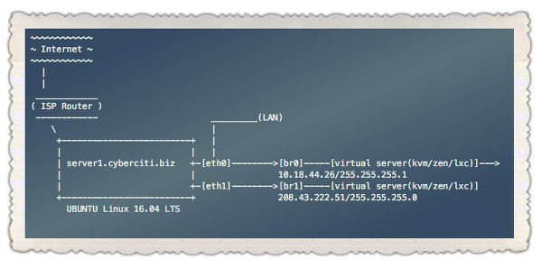

编译自：http://www.cyberciti.biz/faq/how-to-create-bridge-interface-ubuntu-linux/
作者： VIVEK GITE
原创：LCTT https://linux.cn/article-7605-1.html
译者： MikeCoder
本文地址：https://linux.cn/article-7605-1.html
作为一个 Ubuntu 16.04 LTS 的初学者。如何在 Ubuntu 14.04 和 16.04 的主机上搭建网桥呢？
顾名思义，网桥的作用是通过物理接口连接内部和外部网络。对于虚拟端口或者 LXC/KVM/Xen/容器来说，这非常有用。网桥虚拟端口看起来是网络上的一个常规设备。在这个教程中，我将会介绍如何在 Ubuntu 服务器上通过 bridge-utils (brctl) 命令行来配置 Linux 网桥。

图 01: Kvm/Xen/LXC 容器网桥示例 (br0)
在这个例子中，eth0 和 eth1 是物理网络接口。eth0 连接着局域网，eth1 连接着上游路由器和互联网。
使用 apt-get 命令 安装 bridge-utils：
$ sudo apt-get install bridge-utils
或者
$ sudo apt install bridge-utils
样例输出:

图 02: Ubuntu 安装 bridge-utils 包
使用你熟悉的文本编辑器修改 /etc/network/interfaces ，例如 vi 或者 nano ：
$ sudo cp /etc/network/interfaces /etc/network/interfaces.bakup-1-july-2016$ sudo vi /etc/network/interfaces
接下来设置 eth1 并且将它映射到 br1 ，输入如下（删除或者注释所有 eth1 相关配置）：
### br1 使用静态公网 IP 地址，并以 ISP 的路由器作为网关auto br1iface br1 inet staticaddress 208.43.222.51network 255.255.255.248netmask 255.255.255.0broadcast 208.43.222.55gateway 208.43.222.49bridge_ports eth1bridge_stp offbridge_fd 0bridge_maxwait 0
接下来设置 eth0 并将它映射到 br0，输入如下（删除或者注释所有 eth0 相关配置）：
auto br0iface br0 inet staticaddress 10.18.44.26netmask 255.255.255.192broadcast 10.18.44.63dns-nameservers 10.0.80.11 10.0.80.12# set static route for LANpost-up route add -net 10.0.0.0 netmask 255.0.0.0 gw 10.18.44.1post-up route add -net 161.26.0.0 netmask 255.255.0.0 gw 10.18.44.1bridge_ports eth0bridge_stp offbridge_fd 0bridge_maxwait 0
如果使用 DHCP ，配置选项是这样的：
auto br0iface br0 inet dhcpbridge_ports eth0bridge_stp offbridge_fd 0bridge_maxwait 0
保存并且关闭文件。
你需要重启服务器或者输入下列命令来重启网络服务（在 SSH 登录的会话中这可能不管用）：
$ sudo systemctl restart networking
如果你证使用 Ubuntu 14.04 LTS 或者更老的没有 systemd 的系统，输入：
$ sudo /etc/init.d/restart networking
使用 ping/ip 命令来验证 LAN 和 WAN 网络接口运行正常：
### 查看 br0 和 br1ip a show### 查看路由信息ip r### ping 外部站点ping -c 2 cyberciti.biz### ping 局域网服务器ping -c 2 10.0.80.12
样例输出：

图 03: 验证网桥的以太网连接
现在，你就可以配置 br0 和 br1 来让 XEN/KVM/LXC 容器访问因特网或者私有局域网了。再也没有必要去设置特定路由或者 iptables 的 SNAT 规则了。
via: http://www.cyberciti.biz/faq/how-to-create-bridge-interface-ubuntu-linux/
作者：VIVEK GITE 译者：MikeCoder 校对：wxy
编译自：http://www.cyberciti.biz/faq/how-to-create-bridge-interface-ubuntu-linux/
作者： VIVEK GITE
原创：LCTT https://linux.cn/article-7605-1.html
译者： MikeCoder
本文由 LCTT 原创翻译，Linux中国首发。也想加入译者行列，为开源做一些自己的贡献么？欢迎加入 LCTT！
翻译工作和译文发表仅用于学习和交流目的，翻译工作遵照 CC-BY-NC-SA 协议规定，如果我们的工作有侵犯到您的权益，请及时联系我们。
欢迎遵照 CC-BY-NC-SA 协议规定转载，敬请在正文中标注并保留原文/译文链接和作者/译者等信息。
文章仅代表作者的知识和看法，如有不同观点，请楼下排队吐槽 :D
新版指的至少是 14.04。1来自四川成都的 Chrome 51.0|GNU/Linux 用户 发表于 2016-7-22 16:48 的评论：这篇文章(原文)不是有病吗？在系统默认有 NetworkManager 服务，iproute2 包，还安装了 bridge-utils 的情况下，居然还选择直接编辑配置文件。对于这种直接编辑配置文件的做法，一不直观友好，二如同在 Windows 下直接编辑注册表一样是存在相当大误操作的可能，三，不一定编辑后就能立即生效，比如修改 systemd 的 service 文件后，需要 systemctl daemon-reload 。2来自广东广州的 Firefox 47.0|Ubuntu 用户 发表于 2016-7-23 08:19 的评论：ubuntu server版可能是没有network mananger的吧？3来自四川成都的 Chrome 51.0|GNU/Linux 用户 发表于 2016-7-23 09:21 的评论：新版应该是默认安装的。而且专门为 Linux 而开发的 iproute2，就是用来配置网络的。
新版应该是默认安装的。而且专门为 Linux 而开发的 iproute2，就是用来配置网络的。1来自四川成都的 Chrome 51.0|GNU/Linux 用户 发表于 2016-7-22 16:48 的评论：这篇文章(原文)不是有病吗？在系统默认有 NetworkManager 服务，iproute2 包，还安装了 bridge-utils 的情况下，居然还选择直接编辑配置文件。对于这种直接编辑配置文件的做法，一不直观友好，二如同在 Windows 下直接编辑注册表一样是存在相当大误操作的可能，三，不一定编辑后就能立即生效，比如修改 systemd 的 service 文件后，需要 systemctl daemon-reload 。2来自广东广州的 Firefox 47.0|Ubuntu 用户 发表于 2016-7-23 08:19 的评论：ubuntu server版可能是没有network mananger的吧？
ubuntu server版可能是没有network mananger的吧？1来自四川成都的 Chrome 51.0|GNU/Linux 用户 发表于 2016-7-22 16:48 的评论：这篇文章(原文)不是有病吗？在系统默认有 NetworkManager 服务，iproute2 包，还安装了 bridge-utils 的情况下，居然还选择直接编辑配置文件。对于这种直接编辑配置文件的做法，一不直观友好，二如同在 Windows 下直接编辑注册表一样是存在相当大误操作的可能，三，不一定编辑后就能立即生效，比如修改 systemd 的 service 文件后，需要 systemctl daemon-reload 。
想必这篇作者是那种老古板，知识没更新。1来自四川成都的 Chrome 51.0|GNU/Linux 用户 发表于 2016-7-22 16:48 的评论：这篇文章(原文)不是有病吗？在系统默认有 NetworkManager 服务，iproute2 包，还安装了 bridge-utils 的情况下，居然还选择直接编辑配置文件。对于这种直接编辑配置文件的做法，一不直观友好，二如同在 Windows 下直接编辑注册表一样是存在相当大误操作的可能，三，不一定编辑后就能立即生效，比如修改 systemd 的 service 文件后，需要 systemctl daemon-reload 。
Linux.CN © 2003-2016 Linux中国 | Powered by DX | 图片存储于七牛云存储
京ICP备05083684号-1 京公网安备110105001595
服务条款 | 除特别申明外，本站原创内容版权遵循 CC-BY-NC-SA 协议规定


分享到微信朋友圈
打开微信，点击底部的“发现”，
使用“扫一扫”将网页分享至朋友圈。